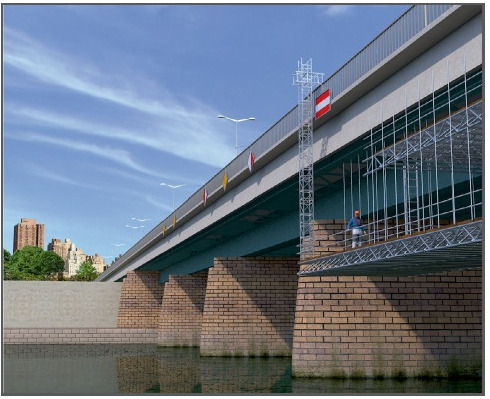
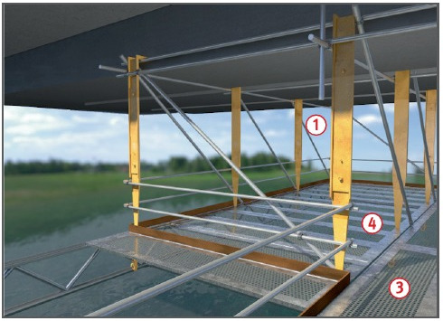
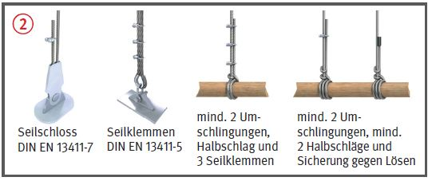

- geprüfte Rundstahlketten,
- Drahtseile,
- Stahlhaken
 .
.
Hängegerüste |



| 1 Lastklassen der Arbeitsgerüste | |
| Lastklasse | Gleichmäßig verteilte Last kN/m2 |
| 1 | 0,75 |
| 2 | 1,50 |
| 3 | 2,00 |
| 2 Hängegerüste aus Stahlrohren | |||||
| Lastklasse | Maße der Gerüstbohlen* cm x cm min. |
Abstand der Querriegel m max. |
Abstand der Längsriegel m max. |
erforderliche zulässige Last jeder Aufhängung kN | |
| längenorientiert min. |
flächenorientiert min. |
||||
| 1,2,3 | 20 x 5,0 24 x 4,5 |
2,50 | 1,75 | 2,50 | 5,0 |
| 20 x 4,5 24 x 4,0 |
2,25 | 1,50 | 3,5 | 7,0 | |
* Gerüstbohlen S10 nach DIN 4074-1
07/2019